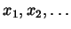
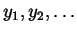
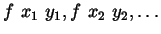

Prior to the development of our transformation tools we noted that the most commonly used higher order predicates used were those in the map family (over 75 percent of higher order calls). However, we had adapted these predicates to suit the logic programming style. The function map2 takes a function f and two lists [ ] and [ ] and returns the list [ ]. If the two input lists differ in length the additional elements in the longer list are ignored, increasing flexibility. The analogous Prolog predicate, map2(F,As,Bs,Cs), is (ironically) less flexible if we allow this freedom. A version which only succeeds for lists of the same length can be used in more modes, for example producing As and Bs from Cs. Only a minority of our uses of map2 were in the mode corresponding to the functional program.
The second most commonly used predicate in the map family (almost as common as map/3) was a predicate we named map0/2. It takes a predicate and applies it to each member of a list, naturally fitting into the map family but without a functional programming counterpart (though it is similar to all which takes a boolean function and a list and returns a boolean). Its uses in Prolog are for several programming techniques which are not available in languages such as Miranda. First, predicates can be used as tests, implicitly succeeding or failing rather than explicitly returning a boolean. Second, because list elements can contain logic variables, calling a predicate for each list element may further instantiate the list. Third, Prolog procedures can have side effects.
Our tool supports transformation of a skeleton into a version of mapN for
all natural numbers N. As well as higher order arguments, the
transformed code has N additional copies of the original set of arguments
and corresponding copies of all non-recursive calls. The principle is that
mapN should succeed only if the original skeleton succeeds for each of
the sets of arguments. Higher order arguments are added to relate
variables which do not occur in any recursive calls. Program 18 shows the
result of transforming tree_any/1 with map(2) and
connected with map(1). Map2_tree_any(P,T1,T2,T3)
is true if the last tree arguments are trees of the same shape with their
elements related by predicate P.
Map_connected(P1,P2,X0,X,Y0,Y) is true if there are two paths of the
same length, from X0 to X and from Y0 to
Y, where the end nodes are related by P2 and the other
nodes are related by P1.
map2_tree_any(A, leaf(B), leaf(C), leaf(D)) :-
call(A, B, C, D).
map2_tree_any(A, tree(B, C), tree(D, E), tree(F, G)) :-
map2_tree_any(A, B, D, F),
map2_tree_any(A, C, E, G).
map_connected(A, B, C, C, D, D) :-
call(A, C, D).
map_connected(A, B, C, D, E, F) :-
call(B, C, E),
edge(C, G),
edge(E, H),
map_connected(A, B, G, D, H, F).
Program 18: Map transformations for tree_any/1 and
connected/2